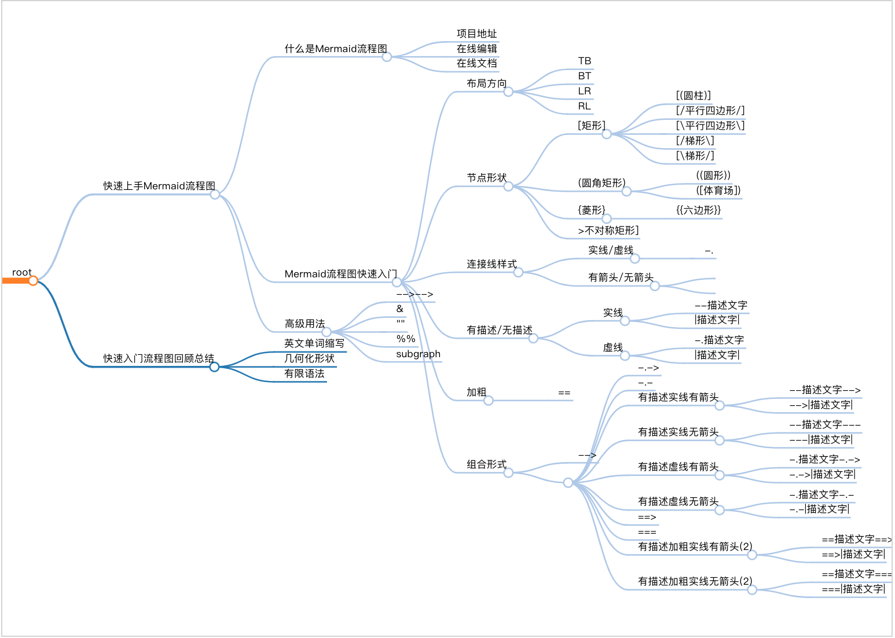

1. 快速上手Mermaid流程图
本文主要介绍了如何快速上手 Mermaid 流程图,不用贴图上传也不用拖拉点拽绘制,基于源码实时渲染流程图,操作简单易上手,广泛被集成于主流编辑器,包括 markdown 写作环境.
通过本节内容你将学习到以下主要内容:
- 了解什么是流程图以及
Mermaid流程图; - 掌握并能记住如何绘制
Mermaid流程图; - 了解
Gitbook写作环境的相关集成插件.

1.1. 什么是Mermaid流程图
关键词
- 项目地址
- 在线编辑
- 官方文档
千言万语不如一张图,使用图形展示事物处理流程的图形称之为流程图.
Mermaid是一个基于 Javascript 的图解和制图工具.它基于 markdown 语法来简化和加速生成流程图的过程,也不止于生成流程图.
源码
graph TD
A[Christmas] -->|Get money| B(Go shopping)
B --> C{Let me think}
C -->|One| D[Laptop]
C -->|Two| E[iPhone]
C -->|Three| F[fa:fa-car Car]
效果
- 项目地址: https://github.com/mermaid-js/mermaid
- 在线编辑: https://mermaidjs.github.io/mermaid-live-editor/
- 官方文档: https://mermaid-js.github.io/mermaid/#/flowchart
1.2. Mermaid流程图快速入门
1.2.1. 布局方向
关键词
+ TB
+ BT
+ LR
+ RL
流程图布局方向,由四种基本方向组成,分别是英文单词: top(上), bottom(下),left(左)和 right(右).其中可选值: TB (从上到下),BT (从下到上),LR (从左往右)和 RL (从右往左)四种.
核心: 仅支持上下左右四个垂直方向,是英文单词首字母大写缩写.
- TB
从上到下: from Top to Bottom
源码
graph TB
Start --> Stop
效果
- BT
从下到上: from Bottom to Top
源码
graph BT
Start --> Stop
效果
- LR
从左往右: from Left to Right
源码
graph LR
Start --> Stop
效果
- RL
从右往左: from Right to Left
源码
graph RL
Start --> Stop
效果
1.2.2. 形状
关键词
- 节点形状
+ [矩形]
- [[暂不支持]]
- [(圆柱)]
- [{暂不支持}]
- [/平行四边形/]
- [\平行四边形\]
- [/梯形\]
- [\梯形/]
+ (圆角矩形)
- ((圆形))
- ([体育场])
- ({暂不支持})
+ {菱形}
- {{六边形}}
- {[暂不支持]}
- {(暂不支持)}
+ >不对称矩形]

流程图节点形状,默认支持矩形和圆两种基本形状,包括基本形状的简单变体,支持嵌套组合形式,其中 [] 表示矩形,() 表示圆弧,{} 表示尖角(窃以为 <> 更适合)等等.
核心: 最外层代表主形状,内层辅助修饰.
一次性节点
一次性节点,默认表现为矩形节点,其文本内容直接显示 id 的值,适合后续不会出现多次引用的情况.
id建议直接写成有意义的文本描述而不是当成唯一标识.
源码
graph TD
id
效果
可重复节点
可重复节点,指定节点形状,其文本内容不再是 id 的值而是 <node shape> 的值,适合后续出现多次引用相同节点的情况.
id代表节点的唯一标识,当前节点的文本描述由<node shape>的值指定,建议id写成有意义的唯一标识.
- 矩形
一般格式:
[node description],[]中括号表示节点是矩形形状,node description是节点的描述文本.
源码
graph LR
id1[This is the text in the box]
效果
- 圆角矩形
一般格式:
(node description),()小括号表示节点是圆角矩形形状,node description是节点的描述文本.
源码
graph LR
id1(This is the text in the box)
效果
- 体育场
一般格式:
([node description]),()小括号嵌套[]中括号表示节点是大弧度的圆角矩形形状,也就是体育场形状,node description是节点的描述文本.
源码
graph LR
id1([This is the text in the box])
效果
- 圆柱
一般格式:
[(node description)],[]中括号嵌套()小括号表示节点是圆柱形状,node description是节点的描述文本.
源码
graph LR
id1[(Database)]
效果
- 圆形
一般格式:
((node description)),()小括号嵌套()小括号表示节点是圆形形状,node description是节点的描述文本.
源码
graph LR
id1((This is the text in the circle))
效果
- 不对称矩形
一般格式:
>node description],左边是右尖括号>,右边是右中括号]表示不对称矩形形状,node description是节点的描述文本.
源码
graph LR
id1>This is the text in the box]
效果
- 菱形
一般格式:
{node description},{}大括号表示菱形形状,node description是节点的描述文本.
源码
graph LR
id1{This is the text in the box}
效果
- 六角形
一般格式:
{{node description}},{}大括号嵌套{}大括号表示六角形形状,node description是节点的描述文本.
源码
graph LR
id1\{\{This is the text in the box\}\}
Gitbook语法中双大括号{}表示特殊意义,上述源码只能转义处理,实际上并不需要\进行转义.
效果
- 平行四边形
一般格式:
[/node description/],[]中括号嵌套//左斜杠表示左斜平行四边形形状,node description是节点的描述文本.
源码
graph TD
id1[/This is the text in the box/]
效果
- 平行四边形
一般格式:
[\node description\],[]中括号嵌套\\右斜杠表示右斜平行四边形形状,node description是节点的描述文本.
源码
graph TD
id1[\This is the text in the box\]
效果
- 梯形
一般格式:
[/node description\],[]中括号嵌套/\左右斜杠表示上短下长梯形形状,node description是节点的描述文本.
源码
graph TD
A[/Christmas\]
效果
- 另一种梯形
一般格式:
[\node description/],[]中括号嵌套\/右左斜杠表示上长下短梯形形状,node description是节点的描述文本.
源码
graph TD
B[\Go shopping/]
效果
1.2.3. 连接线
关键词
+ 实线/虚线
- --
- -.
+ 有箭头/无箭头
- >
- -
+ 有描述/无描述
- 实线
+ --描述文字
+ |描述文字|
- 虚线
+ -.描述文字
+ |描述文字|
+ 加粗
- ==
+ 组合形式
- -->
- ---
- -.->
- -.-
- 有描述实线有箭头
+ --描述文字-->
+ -->|描述文字|
- 有描述实线无箭头
+ --描述文字---
+ ---|描述文字|
- 有描述虚线有箭头
+ -.描述文字-.->
+ -.->|描述文字|
- 有描述虚线无箭头
+ -.描述文字-.-
+ -.-|描述文字|
- ==>
- ===
- 有描述加粗实线有箭头(2)
+ ==描述文字==>
+ ==>|描述文字|
- 有描述加粗实线无箭头(2)
+ ==描述文字===
+ ===|描述文字|
流程图连接线样式,支持实线和虚线以及有箭头样式和无箭头样式,除此之外还支持添加连接线描述文字,其中 -- 代表实线,实线中间多一点 -.- 代表虚线,添加箭头用右尖括号 > ,没有箭头继续用短横线 -.
核心: 先实线再虚线,先有箭头再去箭头,左边位置添加描述文字需要区分实现还是虚线,右边位置添加描述文字格式一致.
- 有箭头无描述实线
一般格式:
-->,其中--表示实线,>表示有箭头.
源码
graph LR
A-->B
效果
- 无箭头实线
一般格式:
---,其中--表示实线,-表示无箭头.
源码
graph LR
A --- B
效果
- 带描述的有箭头实线
一般格式:
--connection line description-->,其中左边的--添加到实线左边位置,右边的-->表示带箭头的实线.
源码
graph LR
A-- text -->B
效果
一般格式:
|connection line description|,其中||添加到连接线右边位置.
源码
graph LR
A-->|text|B
效果

- 带描述的无箭头实线
一般格式:
--connection line description,其中左边的--添加到实线左边位置,右边的---表示不带箭头的实线.
源码
graph LR
A-- This is the text ---B
效果
一般格式:
|connection line description|,其中||添加到连接线右边位置.
源码
graph LR
A---|This is the text|B
效果
- 有箭头虚线
一般格式:
-.connection line description.->,其中左边的-.添加到虚线左边位置,右边的.->表示带箭头的虚线.
源码
graph LR
A-. text .-> B
效果
- 有箭头加粗实线
一般格式:
==>,表示加粗实线.
源码
graph LR
A ==> B
效果
- 带描述的有箭头加粗实线
一般格式:
==connection line description,左边的==添加到加粗实现左边,右边的==>代表加粗实线.
源码
graph LR
A == text ==> B
效果
- 带描述的有箭头加粗实线
一般格式:
|connection line description|,其中||添加到连接线右边位置.
源码
graph LR
A ==>|text| B
效果
1.2.4. 高级用法
关键词
+ -->-->
+ &
+ ""
+ %%
+ subgraph
- 多节点链式连接
源码
支持链式连接方式,A-->B-->C 等价于 A-->B 和 B-->C 形式.
graph LR
A -- text --> B -- text2 --> C
效果
- 多节点共同连接
支持共同连接方式,A-->B & C 等价于 A-->B 和 A-->C 形式.
源码
graph LR
a --> b & c--> d
效果
- 多节点相互连接
多节点共同连接的变体形式,A & B --> C & D 等价于 A-->C ,A-->D,B-->C 和 B-->D 四种组合形式.
源码
graph TB
A & B--> C & D
效果
- 双引号包裹特殊字符
连接线描述文字存在特殊字符使用双引号 "" 包裹处理,如遇到 [] 和 () 以及 {} 等特殊字符情况.
源码
graph LR
id1["This is the (text) in the box"]
效果
- 双引号包裹转义字符
支持 Html 转移字符
源码
graph LR
A["A double quote:#quot;"] -->B["A dec char:#9829;"]
效果
- 嵌套子流程图
定义
subgraph title
graph definition
end
示例
graph TB
c1-->a2
subgraph one
a1-->a2
end
subgraph two
b1-->b2
end
subgraph three
c1-->c2
end
- 注释语法
注释以 %% 开头并且独占一行.
graph LR
%% this is a comment A -- text --> B{node}
A -- text --> B -- text2 --> C
1.3. 快速入门流程图回顾总结
关键词
- 英文单词缩写
- 几何化形状
- 有限语法

Mermaid 是一款开源的制图工具,可使用 Markdown 语法绘制流程图,支持更改流程图节点形状,添加描述文字以及更改连接线样式等等.
1.3.1. 英文单词缩写
四种布局方向的值是英文单词首字母大写缩写形式,默认仅支持垂直方向.
| 中文 | 英文 | 示例 |
|---|---|---|
| 图解 | graph | graph 流程图类型标识 |
| 子图 | subgraph | subgraph 嵌套子流程图标识 |
| 上 | top | TB 或 BT ,从上到下或从下到上的布局方向 |
| 下 | bottom | BT 或 TB,从下到上或从上到下的布局方向 |
| 左 | left | LR 或 RL,从左往右或从右往左的布局方向 |
| 右 | right | RL 或 LR,从右往左或从左往右的布局方向 |
1.3.2. 几何化形状
键盘符号形象化几何形状,组合形式表示形状的叠加,其中最外层符号是主形状,嵌套符号是辅助形状.
- 基本单元
| 表示法 | 含义 | 类型 | 备注 |
|---|---|---|---|
[] |
矩形 | 节点形状 | 支持 |
() |
圆角矩形 | 节点形状 | 支持 |
{} |
菱形 | 节点形状 | 支持 |
<> |
菱形 | 节点形状 | 不支持 |
-- |
实线 | 连接线样式 | 支持 |
-. |
虚线 | 连接线样式 | 支持 |
== |
加粗实线 | 连接线样式 | 支持 |
=: |
加粗虚线 | 连接线样式 | 不支持 |
> |
有箭头 | 连接线样式 | 支持 |
- |
无箭头 | 连接线样式 | 支持 |
双竖线 |
右边连接线描述文字 | 连接线描述文字 | 支持 |
-- |
左边实线连接线描述文字 | 连接线描述文字 | 支持 |
-. |
左边虚线连接线描述文字 | 连接线描述文字 | 支持 |
== |
左边加粗实线连接线描述文字 | 连接线描述文字 | 支持 |
=: |
左边加粗虚线连接线描述文字 | 连接线描述文字 | 不支持 |
- 组合单元
| 表示法 | 含义 | 类型 | 备注 |
|---|---|---|---|
[[]] |
正方形 | 节点形状 | 不支持 |
[()] |
圆柱体 | 节点形状 | 支持 |
[{}] |
棱柱体 | 节点形状 | 不支持 |
(()) |
圆形 | 节点形状 | 支持 |
([]) |
体育场 | 节点形状 | 支持 |
({}) |
圆弧 | 节点形状 | 不支持 |
双大括号 |
六边形 | 节点形状 | 支持 |
{[]} |
正多边形 | 节点形状 | 不支持 |
{()} |
圆弧 | 节点形状 | 不支持 |
--> |
实线带箭头 | 连接线样式 | 支持 |
--- |
实线无箭头 | 连接线样式 | 支持 |
-.> |
虚线带箭头 | 连接线样式 | 不支持 |
-.-> |
虚线带箭头 | 连接线样式 | 支持 |
.-> |
虚线带箭头 | 连接线样式 | 支持 |
-.- |
虚线无箭头 | 连接线样式 | 支持 |
.- |
虚线无箭头 | 连接线样式 | 支持 |
==> |
加粗实线带箭头 | 连接线样式 | 支持 |
=== |
加粗实线无箭头 | 连接线样式 | 支持 |
=:> |
加粗虚线带箭头 | 连接线样式 | 不支持 |
=:=> |
加粗虚线带箭头 | 连接线样式 | 不支持 |
=:= |
加粗虚线无箭头 | 连接线样式 | 不支持 |
:= |
加粗虚线无箭头 | 连接线样式 | 不支持 |
双竖线 |
右边连接线描述文字 | 连接线描述文字 | 支持 |
--connection line description--> |
左边实线带箭头连接线描述文字 | 连接线描述文字 | 支持 |
-.connection line description-.-> |
左边虚线带箭头连接线描述文字 | 连接线描述文字 | 支持 |
--connection line description--- |
左边实线无箭头连接线描述文字 | 连接线描述文字 | 支持 |
-.connection line description-.- |
左边虚线无箭头连接线描述文字 | 连接线描述文字 | 支持 |
==connection line description==> |
左边加粗实线带箭头连接线描述文字 | 连接线描述文字 | 支持 |
=:connection line description=:=> |
左边加粗虚线带箭头连接线描述文字 | 连接线描述文字 | 不支持 |
==connection line description=== |
左边加粗实线无箭头连接线描述文字 | 连接线描述文字 | 支持 |
=:connection line description=:= |
左边加粗虚线无箭头连接线描述文字 | 连接线描述文字 | 不支持 |
1.3.3. 有限语法
不论是节点形状还是连接线样式,语法支持是有限的,并不是随意组合的叠加状态,也可能随着后续更新会支持更多,一切以官方文档为主.
除了提供最基础的操作节点的能力之外,还可以根据 JS 和 CSS 相关知识高度自定义流程图行为表现,具体可参考官方文档.
官方文档: https://mermaid-js.github.io/mermaid/#/flowchart?id=styling-and-classes
- 交互能力 Interaction : https://mermaid-js.github.io/mermaid/#/flowchart?id=interaction
- 外观样式 Styling and classes : https://mermaid-js.github.io/mermaid/#/flowchart?id=interaction
- 字体支持 Basic support for fontawesome: https://mermaid-js.github.io/mermaid/#/flowchart?id=basic-support-for-fontawesome
- 空格分隔 https://mermaid-js.github.io/mermaid/#/flowchart?id=graph-declarations-with-spaces-between-vertices-and-link-and-without-semicolon
作者: 雪之梦技术驿站
来源: 雪之梦技术驿站
本文原创发布于「雪之梦技术驿站」,转载请注明出处,谢谢合作!